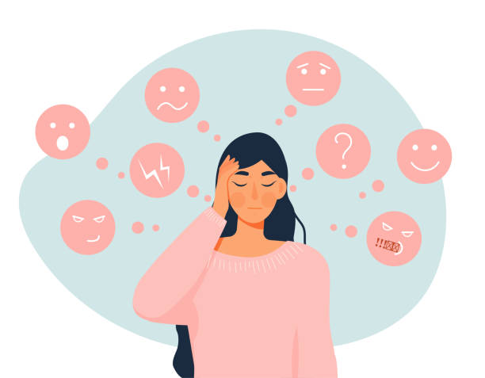
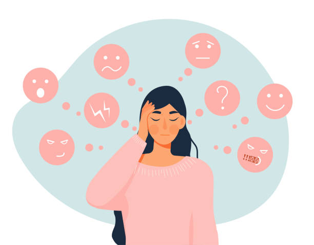

Donde los sentimientos crecen y florecen
Exploramos los sentimientos más profundos y los cultivamos con amor y cuidado. Un espacio para reflexionar, crecer y florecer juntos
Emociones Cultivando pensamientos, cosechando
Exploramos los sentimientos más profundos y los cultivamos con amor y cuidado. Un espacio para reflexionar, crecer y florecer juntos
Emociones 